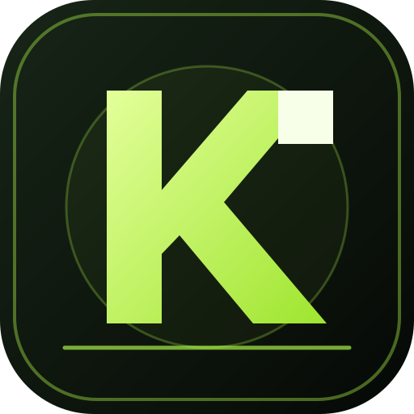

KH么KozakГРА • МУЗИКА • МІЙ ПРОФІЛЬ
Політика конфіденційності
Останнє оновлення: 12 жовтня 2026 року.
Ця сторінка описує обробку даних у вебзастосунку KH么Kozak, доступному за адресою GitHub Pages. Застосунок містить ігри, профільні сторінки, галерею аватарок та музичний розділ.
1. Дані, що зберігаються на пристрої
Ігровий прогрес, монети, XP, налаштування, обране, історія локального помічника та частина даних профілю можуть зберігатися у сховищі браузера (localStorage). Ці дані зазвичай залишаються в поточному браузері й не синхронізуються автоматично між пристроями. Очищення даних браузера може їх видалити.
2. Акаунт і хмарне збереження (Gaming Hub 4.1)
Якщо власник сайту налаштує Supabase і гравець добровільно створить акаунт, Supabase Auth оброблятиме адресу електронної пошти та технічні дані, потрібні для входу. Сумісні ключі ігрового прогресу сайту можуть зберігатися в таблиці хмарних збережень, прив’язаній до ID акаунта. Політики Row Level Security обмежують доступ до запису його власником. Ця функція не синхронізує інвентар або валюту офіційного PUBG Mobile. Якщо Supabase не налаштовано, сайт залишається в локальному режимі й не виконує хмарну синхронізацію.
3. Сторонні сервіси
Музичний розділ використовує вбудований плеєр YouTube або посилання на YouTube. Якщо відкрити чи відтворити такий контент, Google/YouTube може отримувати технічні дані відповідно до власних правил. Застосунок також містить посилання на зовнішні сайти, зокрема Google Play і Telegram; їхні правила конфіденційності діють окремо.
У коді є підготовлена інтеграція Firebase для онлайн-таблиці рекордів. Її використання залежить від фактичного налаштування Firebase та доступності функції на момент користування. Якщо інтеграцію ввімкнено, Firebase може обробляти технічні ідентифікатори анонімної автентифікації та опубліковані гравцем псевдонім і результат.
4. Доступ, передача та реклама
Ми не продаємо персональні дані. Сайт не має власної системи рекламного профілювання або власного платіжного оформлення. Водночас вбудовані сторонні сервіси можуть збирати дані відповідно до своїх політик. Не вводьте в профіль або чат паролі, платіжні реквізити чи іншу конфіденційну інформацію.
4. Діти та батьки
Застосунок призначений для загальної аудиторії гравців. Якщо ви вважаєте, що дитина передала персональні дані, зверніться через сторінку підтримки нижче, щоб ми могли розглянути запит.
5. Безпека та строки зберігання
Локальні дані зберігаються, доки користувач або браузер їх не видалить. Дані сторонніх сервісів зберігаються за правилами відповідного провайдера. Жодна передача чи система зберігання не може гарантувати абсолютну безпеку.
6. Ваші запити та підтримка
З питань конфіденційності, доступу або видалення даних можна звернутися через сторінку підтримки проєкту на GitHub. Не публікуйте там секрети чи чутливі персональні дані.
Важливо: перед публікацією в Google Play розробник має звірити цю політику з фактичною конфігурацією застосунку, усіма SDK та функціями, що будуть увімкнені у релізі. Декларація Data safety у Play Console має відповідати реальній поведінці збірки.
← Повернутися до застосунку